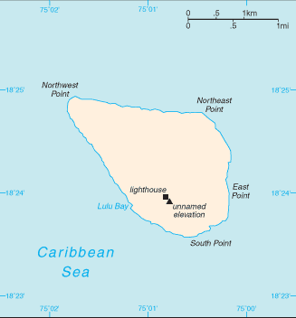
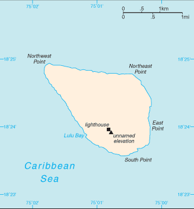

Central America and Caribbean :: NAVASSA ISLAND
Introduction :: NAVASSA ISLAND
-
This uninhabited island was claimed by the US in 1857 for its guano. Mining took place between 1865 and 1898. The lighthouse, built in 1917, was shut down in 1996 and administration of Navassa Island transferred from the US Coast Guard to the Department of the Interior, Office of Insular Affairs. A 1998 scientific expedition to the island described it as a "unique preserve of Caribbean biodiversity." The following year it became a National Wildlife Refuge and annual scientific expeditions have continued.
Geography :: NAVASSA ISLAND
-
Caribbean, island in the Caribbean Sea, 30 nm west of Tiburon Peninsula of Haiti18 25 N, 75 02 WCentral America and the Caribbeantotal: 5.4 sq kmland: 5.4 sq kmwater: 0 sq kmcountry comparison to the world: 249about nine times the size of the National Mall in Washington, DC0 km8 kmterritorial sea: 12 nmexclusive economic zone: 200 nmmarine, tropicalraised flat to undulating coral and limestone plateau; ringed by vertical white cliffs (9 to 15 m high)mean elevation: NAelevation extremes: lowest point: Caribbean Sea 0 mhighest point: 200 m NNW of lighthouse 85 mguano (mining discontinued in 1898)agricultural land: 0%arable land 0%; permanent crops 0%; permanent pasture 0%forest: 0%other: 100% (2011 est.)hurricanessome coral bleachingstrategic location 160 km south of the US Naval Base at Guantanamo Bay, Cuba; mostly exposed rock with numerous solution holes (limestone sinkholes) but with enough grassland to support goat herds; dense stands of fig trees, scattered cactus
People and Society :: NAVASSA ISLAND
-
uninhabitednote: transient Haitian fishermen and others camp on the island
Government :: NAVASSA ISLAND
-
conventional long form: noneconventional short form: Navassa Islandetymology: the flat island was named "Navaza" by some of Christopher COLUMBUS' sailors in 1504; the name derives from the Spanish term "nava" meaning "flat land, plain, or field"unorganized, unincorporated territory of the US; administered by the Fish and Wildlife Service, US Department of the Interior from the Caribbean Islands National Wildlife Refuge in Boqueron, Puerto Rico; in September 1996, the Coast Guard ceased operations and maintenance of Navassa Island Light, a 46-meter-tall lighthouse on the southern side of the island; Haiti has claimed the island since the 19th centurythe laws of the US, where applicable, applynone (territory of the US)the flag of the US is used
Economy :: NAVASSA ISLAND
-
Subsistence fishing and commercial trawling occur within refuge waters.
Transportation :: NAVASSA ISLAND
-
none; offshore anchorage only
Military and Security :: NAVASSA ISLAND
-
defense is the responsibility of the US
Transnational Issues :: NAVASSA ISLAND
-
claimed by Haiti, source of subsistence fishing